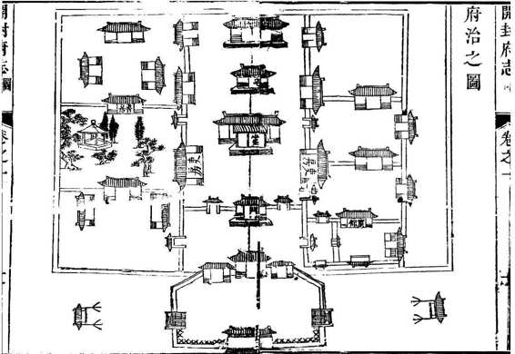
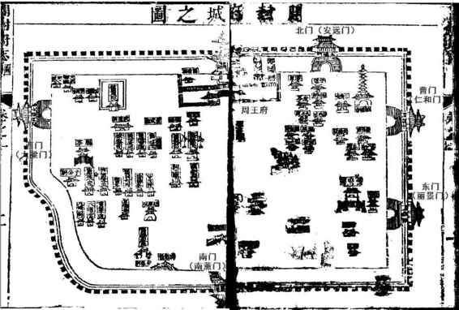

开封作为重要城市的历史，从战国算起。魏国都城原在安邑（山西夏县），前361年魏惠王时迁都。新都城在东方六百里以外，并且越过黄河，从河之北到了河之南。这便是开封，当时称大梁。过了一百多年，前225年，秦将王贲包围大梁，决黄河水灌之，三阅月而魏王降，魏国遂灭。我们惊讶地注意到，这城市第一次惨痛经历，就与黄河联系在一起。
此后经过千年沉寂，公元九世纪，开封才再度崛起。唐亡后的五代，有四代以此为都，即后梁、后晋、后汉和后周。十世纪，后周军队实权人物赵匡胤，在陈桥兵变，黄袍加身，取周而代之，创立宋朝，开封于是过渡为大宋京师，称东京，就此开始一段辉煌繁盛的历史。金灭北宋，曾以开封为汴京，继而改称南京。金人对于“京”的名称颇为随意，他们有“上京”、“东京”、“西京”、“中京”、“燕京”等很多地名，另外，还有被称为“京兆府”的西安。所以，开封之称“南京”，很长时间中都没什么特殊含义。直到1214年，因为蒙古人的压迫，金人弃燕京（北京）迁南京，开封才重新真正成为一座都城，然为时甚短，仅有十九年，金即亡于元。又过一百多年，明朝建国，以民族英雄自居的朱元璋，曾有意置帝都于开封，以绍续大宋之盛，然而最终割舍了此念。
开封城制，曾和北京一样，分外城、内城、皇城。失去都城地位后，上述规制自不能存。元、明、清的开封城墙，实际是金以前的内城。原有十三座城门，1357年，为防御红巾军封堵了八个，留下五门即丽景（东门）、大梁（西门）、南薰（南门）、安远（北门）和仁和（曹门）。曹门在东北角，是唯一留下来的侧门，因直通曹州（菏泽）而俗称曹门。这五座城门，是后面攻防战中的重要地名，会经常提到。
开封城墙自然随历史废兴屡毁屡建，值得一提的，是洪武元年（1638）整体改用砖石构筑。虽然“秦砖汉瓦”很有名，但明代以前，中国筑城多为夯土。十年前，笔者旧居与元大都外城墙遗址相邻，散步常至彼处，其实就是一隆起的土坡。目今所能见的砖筑城墙，几乎全为明代及以后之物，包括长城在内。这一方面显示了明代财力的强盛，另一面，也与战争条件变化相适应。人们往往以为，火器在中国战争中的大量运用，要等到十九世纪西方列强东来。八十年代激烈反传统时，有人撰文谈“四大发明”，称中国虽发明指南针却只用来看风水，虽发明火药却只用来放爆竹。其实并非如此，十九世纪中国落后于西方的，是武器性能和技术水平。西方“船坚炮利”，中国只是船不坚炮不利，而非无炮也。火药在宋代已运用于军事，《水浒传》中轰天雷凌振，便是炮兵专家。若以为小说家言不足凭，我们在开封之围中却将切实看到，热兵器已经成为交战双方一致仰恃的军事手段，不仅有炮战，且有地雷战。所以，开封之城由土墙改砖墙，提高了抗御能力，对于李自成久攻不下，是一个颇为关键的因素。

康熙三十四年《开封府志》卷之一“图考”选图二•开封府治府衙布局严整，功能丰富，除了官署和官邸，左侧有花园、书房，甚至还有宾馆——右首第一个院落。

康熙三十四年《开封府志》卷之一“图考”选图一•开封府城
开封解围之后， 近二十年迹近废墟。清朝对其首次修复在康熙元年（1662），随后两次是二十七年、三十三年，“各门营一如旧制”，依照崇祯时开封城旧制给以恢复。本府志即为第三次修复工程的翌年编刻，换言之，图上所绘开封，与围城时面貌一致。原刻墨渍团漫，为便观览，对几个重要地名添了标注。
另需了解的与攻防相关的设施，还有护城河。《汴京遗迹志》：“其濠曰护龙河，阔十余丈，濠之内外皆植杨柳，粉墙朱户，禁人往来。”[3]这是宋代的情形。而据明人陈所蕴引郑之鎏《续东京梦华录》：“今之城门有五，各建谯楼。城之外百步许，有海濠焉。匝城四围，阔数十丈，深四五丈。”[4]可见宋人所称“护龙河”、明人所称“海濠”的开封护城河，颇为壮阔。然而，上述描述或许夸张。一丈合三米许，十余丈则有四十米，数十丈或达百米以上，与北京长安街最宽处相当，应无可能。《守汴日志》说，闯军掘河引水后，海濠变得广有四五丈，深三丈余，似更合实际。总之“海濠”在攻防中也发挥了重要作用，后面我们会看到。
万历二十八年（1600），在河南巡抚曾如春要求下，对开封城池进行了一次大的增修。《增建敌楼碑记》说，当时城墙完好，“惟敌楼阙如”。一日，曾如春率省府各大员，登城绕行视察，“四顾而叹曰，城以卫国、楼以翼城，匪直为观美也”。城乃军事工事，不能变成摆设，而敌楼阙如，似乎就是如此。士兵守城，风雨来袭有无避身之处？矢石猬至如何得到有效保护？“不待敌人攻我，我业已坐而自困矣。即金城千里何为？是当亟议早图者。”此时开封，为何有城无楼，不太清楚。考嘉靖二十五年（1546）成书的《汴京遗迹志》：“今省城，即宋之旧里城……门五……外建月城，上各建楼”[5]，则五十四年前，敌楼还是有的，恐怕就是在此期间所圮坏，亦未可知。总之，视察的结果，决定增建敌楼，而由布政使姚进主其事。“楼既成，大夫相与落之，登楼四望，太行嵩室居然在几案间，大河汤汤，仅如衣带，城之大观于是乎备矣。”[6]
此距辛巳、壬午之围发生，还有四十年。当时，陈所蕴便称道：“异日者，父老子弟攫城自守时，计必追颂中丞、方伯，永赖不朽功。”明清官场出于风雅，好用古称。“中丞”即巡抚，指曾如春。“方伯”在殷周原指诸侯，后指地方长官，明清则借称布政使，这里当然是指姚进。事实的确验证了这番预言。若非这次未雨绸缪增修敌楼，后来开封想要抵挡闯军三次攻城，亦属渺茫。